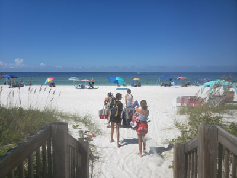
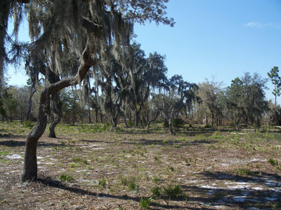
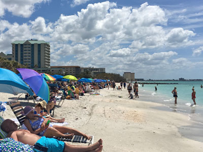
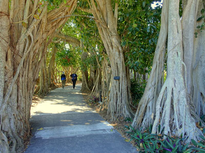
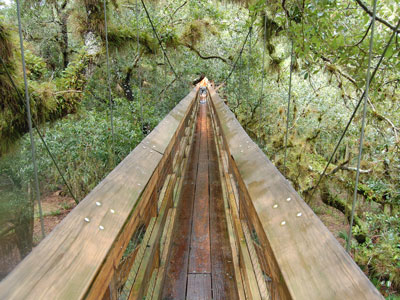

.jpg){kind=link}
City on the southwestern coast of Florida, renowned for its beaches and resorts, and includes Sarasota Bay and several barrier islands between the bay and the Gulf of Mexico, and long the winter headquarters of the Ringling Brothers Circus, many landmarks in Sarasota are named for the Ringlings
Featured Locations

Upstateherd, , via Wikimedia Commons; Image Size Adjusted
Bradenton Riverwalk
1.5-mile-long public green space located along the Manatee River in Bradenton, Florida

Upstateherd, CC BY-SA 4.0, via Wikimedia Commons; Image Size Adjusted

Ca'D Zan
Mediterranean revival style residence in Sarasota, Florida, adjacent to Sarasota Bay, was the winter residence of circus mogul, capitalist, entrepreneur and art collector John Ringling

Mableringling, CC BY-SA 4.0, via Wikimedia Commons; Image Size Adjusted

John and Mable Ringling Museum of Art
Art museum of Florida established as the legacy of Mable Burton Ringling and John Ringling and offers 21 galleries of European paintings as well as Asian, American, and contemporary art

Ebyabe, CC BY-SA 3.0, via Wikimedia Commons; Image Size Adjusted

Lake Manatee State Park
State Park located on the south shore of 2,400-acre Lake Manatee, made up of pine flatwoods, Sand Pine scrub, marshes, and hardwood forests

Fred Hsu on en.wikipedia, CC BY-SA 3.0, via Wikimedia Commons; Image Size Adjusted

Lido Key
Barrier island including Longboat Key, St. Armands Key and Siesta Key, featuring numerous sandy beaches facing the Gulf of Mexico

Daderot, CC0, via Wikimedia Commons; Image Size Adjusted

Marie Selby Botanical Garden
15-acre botanical garden located in Sarasota, located on the grounds of the former home of Marie and William Selby

Shockblaster, CC BY-SA 4.0, via Wikimedia Commons; Image Size Adjusted

Myakka River State Park
State park consisting of 37,000 acres making it one of the state's largest parks and is also one of the oldest parks in the state
Oscar Scherer State Park
Florida State Park located between Sarasota and Venice, near Osprey
Siesta Key
Barrier island off the southwest coast of Florida, located between Roberts Bay and the Gulf of Mexico, with a portion of it lying within the city boundary of Sarasota
St Armands Key
Island in Sarasota Bay off the west coast of Florida and is part of the city of Sarasota, Florida
Overview
Sarasota is a Gulf Coast city in southwest Florida known for its cultural attractions, its white sand beaches, and its legacy as the winter home of the Ringling Bros. and Barnum & Bailey Circus. It is home to the John and Mable Ringling Museum of Art and the Venetian Gothic mansion Ca' d'Zan, and nearby barrier islands such as Siesta Key, whose powdery quartz sand regularly ranks among the best beaches in the country.
Visitors come to Sarasota for the beaches of Siesta Key and Lido Key, for the Ringling estate and its art museum, and for shopping and dining at St. Armands Circle. They also come for the Marie Selby Botanical Gardens, for performing arts at the Van Wezel Hall and Sarasota Opera, and for outdoor recreation at Myakka River State Park.
History
The area was home to the Calusa people and later Spanish explorers, and Scottish colonists arrived in 1885, followed by a small farming and fishing town incorporated in 1902. In 1911, John Ringling, the circus magnate, began visiting, and he invested heavily in the city, building the Ringling Causeway and developing St. Armands Key and Lido Key. The Ringling Circus established its winter quarters here in 1927 and remained until 1959, and Ringling's art collection and mansion were left to the state of Florida in 1936. In the mid-twentieth century, the "Sarasota School" of modernist architecture developed here, with architects such as Paul Rudolph.
Sightseeing and Popular Landmarks
The Ca' d'Zan, John and Mable Ringling's 36-room mansion on Sarasota Bay, was built in 1926 in a style inspired by the Doge's Palace in Venice. Siesta Key Beach has wide, soft white sand, and St. Armands Circle is a shopping and dining district with a ring of boutiques. The Sarasota Bayfront and Marina Jack are popular waterfront spots, and the Sarasota Jungle Gardens and Mote Marine Laboratory & Aquarium are also well known. Bradenton Riverwalk and De Soto National Memorial are in nearby Bradenton.
Culture and Museums
The Ringling Museum has an extensive art collection, especially Baroque paintings by Rubens, and also includes the Circus Museum and a rose garden. The Sarasota Opera, the Asolo Repertory Theatre, the Sarasota Ballet, and the Van Wezel Performing Arts Hall make the city a major arts center, and the Sarasota Film Festival is held in spring. The Marie Selby Botanical Gardens and the Mote Marine Laboratory add to the cultural attractions.
Parks
Sarasota has several beach parks and nature areas. Myakka River State Park, one of the largest in Florida, has wetlands, wildlife, and a canopy walkway, and Oscar Scherer State Park has trails and a freshwater lake. Lake Manatee State Park offers camping and fishing, and Lido Beach, Siesta Beach, and Turtle Beach are open to the public. The Selby Gardens have a collection of orchids and bromeliads.
Seasons and Weather
Sarasota has a humid subtropical to tropical climate. Summers are hot and humid, with highs in the low 90s°F and daily thunderstorms, and winters are mild and dry, with highs in the 70s°F. The peak season runs from December through April, and hurricane season runs from June to November.
This article uses material from Wikipedia as well as information from official tourism and institutional sources. Key references include Visit Sarasota, The Ringling, Selby Gardens, Myakka River State Park, Visit Florida, and National Weather Service Tampa Bay. Wikipedia material is from the articles "Sarasota, Florida" and "John Ringling", and is available under the Creative Commons Attribution-Share-Alike License 3.0.